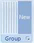
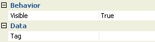
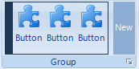
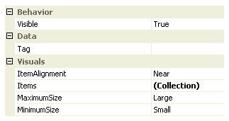
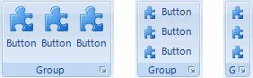
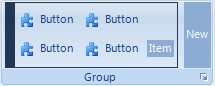
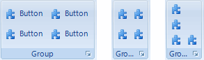

Ribbon Group Containers
A ribbon group can only contain child items that are group containers. Individual group containers have their own restrictions on what types of child item they can themselves contain. Different group containers have different ways of laying out the child items they contain and different rules on how to automatically resize when limited space is available. By choosing the correct type of group container the developer can therefore specify exactly how auto sizing will effect the items it contains.
When editing a ribbon group at design time the collection editor will present you with a list of the available group containers that can be added. The preferred method of designing the ribbon is to use the helper elements that are show in the client area of the ribbon itself. If you click the helper element at the right hand side of the group client area it will show a context menu with the different types of group container allowed. On selecting one of these it will add a new instance with some default items inside the container.
Following are a detailed description of the different types of group container.
Group Container Separator
The group separator is the simplest of all the group containers and should be used to draw a visual separator between other group containers. This container does not allow you to add any child items. Figure 1 shows an example of a group with six group separators at design time. On the right hand side you will notice the New block, this is used at design time to add another group container and when pressed will show a context menu with the types of container available for adding. At runtime this helper element is not present. There are only two properties of interest exposed by the group separator as can be seen in Figure 2.

Figure 1 - Group Separator Design Time Appearance.

Figure 2 - Group Separator Properties.
Visible (group separator)
Use this property to specify if the group separator should be visible at runtime.
Tag (group separator)
Associate application specific information with the object instance by using this property.
Group Container Triple
As the name suggests the group triple container is used to display a maximum of three child items. Figure 3 shows an example of a group at design time that contains a single group triple instance with three child group button items. The group triple at runtime has no user interface but at design time shows the dark blue area around the three buttons. This dark blue area can be used to select the group triple container instance and allow you to update the properties of the instance in the Properties Window. On the right hand side you will notice the New block, this is used at design time to add another group container and when pressed will show a context menu with the types of container available for adding. At runtime neither the dark blue or New button will be present. Figure 4 shows a list of the properties you can modify for the group triple instance.

Figure 3 - Group Triple Design Time Appearance.

Figure 4 - Group Triple Properties.
Visible (group triple)
Use this property to specify if the group triple should be visible at runtime.
Tag (group triple)
Associate application specific information with the object instance by using this property.
ItemAlignment
Determines how items are horizontally aligned when in the medium and small settings.
Items (group triple)
A collection property that contains a maximum of three child items.
MaximumSize (group triple)
MinimumSize (group triple)
These two properties are used to determine the maximum and minimum sizing used for the group at runtime. The maximum size is always the size used if there is enough room for the group to size fully. If there is not enough room then each intermediate size is used until the minimum is reached. The group triple never sizes its child items smaller than the minimum setting. Figure 5 shows the group triple at runtime in each of the three possible size values of Large, Medium and Small.

Figure 5 - Group Triple Sizing - Large, Medium and Small.
Group Container Lines
The group lines container is used to layout child items over either two or three horizontal lines. Figure 6 shows an example of a group at design time that contains a single group lines instance with four child group button items. The group lines at runtime has no user interface but at design time shows the dark blue area around the three buttons. This dark blue area can be used to select the group lines container instance and allow you to update the properties of the instance in the Properties Window. On the right hand side you will notice the New block, this is used at design time to add another group container and when pressed will show a context menu with the types of container available for adding. At runtime neither the dark blue or New button will be present. Figure 7 shows a list of the properties you can modify for the group line instance.

Figure 6 - Group Lines Design Time Appearance.
Figure 7 - Group Lines Properties.
Visible (group lines)
Use this property to specify if the group lines should be visible at runtime.
Items (group lines)
A collection property that contains a zero or more child items.
MaximumSize (group lines)
MinimumSize (group lines)
These two properties are used to determine the maximum and minimum sizing used for the group at runtime. The maximum size is always the size used if there is enough room for the group to size fully. If there is not enough room then each intermediate size is used until the minimum is reached. The group triple never sizes its child items smaller than the minimum setting. Figure 8 shows the group triple at runtime in each of the three possible size values of Large, Medium and Small.

Figure 8 - Group Line Sizing - Large, Medium and Small.
Tag (group lines)
Associate application specific information with the object instance by using this property.